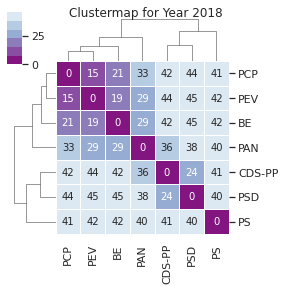
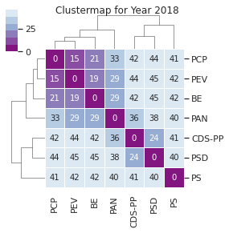

5. As votações no tempo: comparação das legislaturas e anos¶
A verdade tem limites. O erro nenhum: a cair, a cair:
Anos e anos, e eras e eras
Continuou a cair pelo vazio, e sempre mais vazio
Para continuar a cair dia & noite sem fim.—William Blake , «O Livro de Los»
5.1. A XIII Legislatura, ano a ano¶
Olhando para os anos da XIII Legislatura, como se comparam os vários anos com o resultado final? Recordemos o resultado final do clustermap para toda a legislatura, e comparemos com a análise obtida pela consideração apenas das votações de cada ano, isoladamente:

 

## Change the mapping, we now consider Abst and Aus the same
l13_votes_hmn = l13_votes_hm.replace(["A Favor", "Contra", "Abstenção", "Ausência"], [1,-1,0,0]).fillna(0)
## Transpose the dataframe used for the heatmap
l13_votes_t = l13_votes_hmn.transpose()
## Determine the Eucledian pairwise distance
## ("euclidean" is actually the default option)
l13_pwdist = pdist(l13_votes_t, metric='euclidean')
## Create a square dataframe with the pairwise distances: the distance matrix
l13_distmat = pd.DataFrame(
squareform(l13_pwdist), # pass a symmetric distance matrix
columns = l13_votes_t.index,
index = l13_votes_t.index
)
#show(distmat, scrollY="200px", scrollCollapse=True, paging=False)
## Normalise by scaling between 0-1, using dataframe max value to keep the symmetry.
## This is essentially a cosmetic step
#distmat=((distmat-distmat.min().min())/(distmat.max().max()-distmat.min().min()))*1
#distmat.style.apply(highlight_diag, axis=None)
## Perform hierarchical linkage on the distance matrix using Ward's method.
l13_distmat_link = hc.linkage(l13_pwdist, method="ward", optimal_ordering=True )
sns.clustermap(
l13_distmat,
annot = True,
cmap=sns.color_palette("Reds_r"),
linewidth=1,
#standard_scale=1,
row_linkage=l13_distmat_link,
col_linkage=l13_distmat_link,
figsize=(8,8)).fig.suptitle('Portuguese Parliament 13th Legislature, Clustermap',y=1)
plt.show()
5.1.1. A evolução da XIII legislatura¶
Considerando os anos individualmente (isto é, apenas as votações de determinado ano, sem considerar os anos anteriores, observam-se três fases distintas caracterizadas mais pelo posicionamento do PS do que mudanças nos restantes agrupamentos:
2015-2016. O PS tem, nestes anos, sempre maior proximidade com os partidos à sua esquerda, sendo 2015 particularmente vincando; se em 2016 se podem observar alterações nas distâncias (visíveis, de resto, no atenuar das cores utilizadas), é ainda clara a “fronteira” exterior composta por PS e PAN, ambos mais próximos de PCP, PEV e BE que de PSD e CDS-PP.
2017. O PS aparece agora agrupado com CDS-PP e PSD, mas note-se a forma como o algoritmo de agrupamento funciona: o PS está praticamente equidistante de todos, e na verdade ligeiramente mais próximo de BE e PCP do que de PS e CDS-PP; acontece que os partidos à esquerda do PS estão significativamente mais distantes desses partidos, levando a que a primeira divisão feita os coloque separados do PS.
2018-2019: Aqui o PS, pela primeira vez, tem maior distância de alguns dos partidos à sua esquerda do que tem do PSD. Note-se que as diferenças são ainda bastante pequenas, embora aumentem em 2019.
Em resumo, parece existir uma tendência para a deslocação do centro de gravidade com o passar dos anos, que não altera o resultado final.
5.2. A XIV Legislatura, ano a ano¶
A mesma análise para a XIV legislatura:


## Change the mapping, we now consider Abst and Aus the same
l14_votes_hmn = l14_votes_hm.replace(["A Favor", "Contra", "Abstenção", "Ausência"], [1,-1,0,0]).fillna(0)
## Transpose the dataframe used for the heatmap
l14_votes_t = l14_votes_hmn.transpose()
## Determine the Eucledian pairwise distance
## ("euclidean" is actually the default option)
l14_pwdist = pdist(l14_votes_t, metric='euclidean')
## Create a square dataframe with the pairwise distances: the distance matrix
l14_distmat = pd.DataFrame(
squareform(l14_pwdist), # pass a symmetric distance matrix
columns = l14_votes_t.index,
index = l14_votes_t.index
)
#show(distmat, scrollY="200px", scrollCollapse=True, paging=False)
## Normalise by scaling between 0-1, using dataframe max value to keep the symmetry.
## This is essentially a cosmetic step
#distmat=((distmat-distmat.min().min())/(distmat.max().max()-distmat.min().min()))*1
#distmat.style.apply(highlight_diag, axis=None)
## Perform hierarchical linkage on the distance matrix using Ward's method.
l14_distmat_link = hc.linkage(l14_pwdist, method="ward", optimal_ordering=True )
sns.clustermap(
l14_distmat,
annot = True,
cmap=sns.color_palette("Reds_r"),
linewidth=1,
#standard_scale=1,
row_linkage=l14_distmat_link,
col_linkage=l14_distmat_link,
figsize=(8,8)).fig.suptitle('Portuguese Parliament 14th Legislature, Clustermap',y=1)
plt.show()
5.2.1. A evolução da XIV Legislatura¶
Ao contrário da legislatura anterior, esta tem nos outros partidos (que não o PS) a maior parte das diferenças:
2019. A primeira vez que os novos partidos aparecem, e o seu primeiro agrupamento: é o único ano onde a IL aparece agrupada com o CH, eo CDS-PP com o PSD. Á esquerda, a curiosidade do PEV agrupar com BE (e não com o PCP, como em todos os outros anos): de um lado e de outro convém notar que o ano de 2019 tem menos votações por começar já no segundo semestre, o que leva a que os resultados sejam mais susceptíveis de variação. O PS segue a tendência que se observa do último ano da legislatura anterior, com menor distância dos partidos à sua direita mas numa situação de alguma centralidade.
2020: Cristina Rodrigues já com votações próprias, agrupada com o PAN (até porque as votações até à data da sua saída são consideradas as mesmas). À esquerda o cenário que será final, e à direita também, com a excepção do agrupamento de PS e PSD.
2021: PS a separar-se do PSD e, em geral, reduzindo as distâncias dos partidos à sua esquerda comparando com o ano anterior. Se até 2021 a tendência foi a de aumento da distância do PS dos partidos à sua esquerda (de forma geral, e com dimensões diferentes), neste ano essa distância estabiliza ou reduz-se ligeiramente.